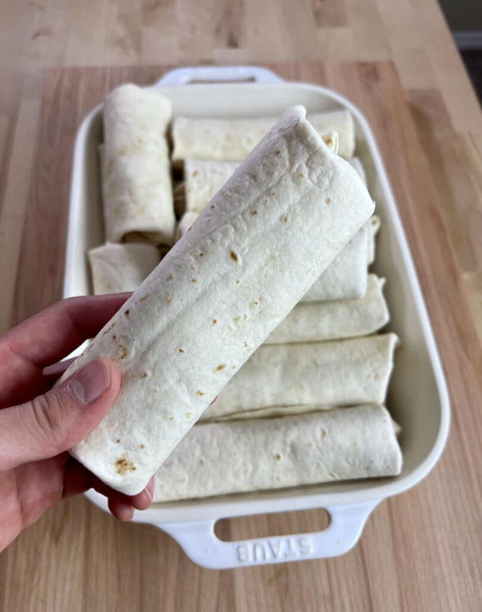

Breakfast Burritos

Goated Meal Prep Breakfast Burritos
Freezer Friendly Breakfast Burritos made of turkey sausage, eggs, peppers, onion, spinach, and cheese.
These can be prepped in advanced and stored into the freezer to give you breakfast each morning in about a minute.
Ingredients
For the Turkey Sausage
- 1 lb (454g) ground turkey 93/7
- 1 tbsp (12g) brown sugar
- 1 tsp (6g) salt
- 1 tsp (3g) pepper
- 1 tsp (3g) cayenne pepper
- 1 tsp (3g) smoked paprika
- 1 tsp (3g) onion powder
- 1 tsp (1g) oregano
- 1.5 tsp (2g) rubbed sage
- 1 tbsp (15g) oil
For the Filling
- 8 large (560g) eggs
- 2 tbsp (30g) milk
- 1 medium (150g) green pepper
- 1 medium (150g) red pepper
- 1 medium (200g) sweer onion
5 oz (140g) spinach
- 2 cups (170g) frozen shredded hashbrowns
- 2 tbsp (30g) oil
- 1 cup (120g) shredded cheese
- 17 9 inch flower tortillas
Steps
Preparing the Turkey
- In a large bowl add the turkey and all of the seasonings and brown sugar. Mix thoroughly to incorporate into the meat.
- In a large skillet over medium high heat, add 1 tbsp of oil and add in the turkey. Brown it on both sides and cook it until no pink color remains.
- Break up the sausage into small pieces and set aside until you are ready for it later.
Preparing the Filling
- Cut the peppers and onion into a small dice and roughly chop the spinach into smaller pieces. Measure out 2 cups of frozen shredded hash browns.
- In a large skillet over medium high heat add 1 tbsp of oil and add in the peppers and onions
- Once the onions have begun to turn translucent, add in the hash browns and spinach. Stir to combine
- Crack 8 eggs into a bowl, add in 2 tbsp of milk and beat until they are smooth.
- Add in 1 tbsp of oil and pour the eggs into the center to make scrambled eggs. Cook them for a few minutes until they have finished.
- Once done, remove from the heat and stir in the sausage. Mix and give it a taste test. Adjust flavor with salt and pepper as necessary.
- Construct the burritos